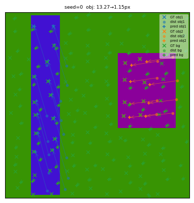
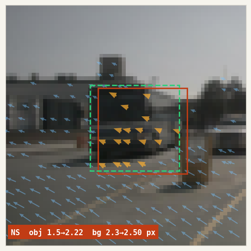
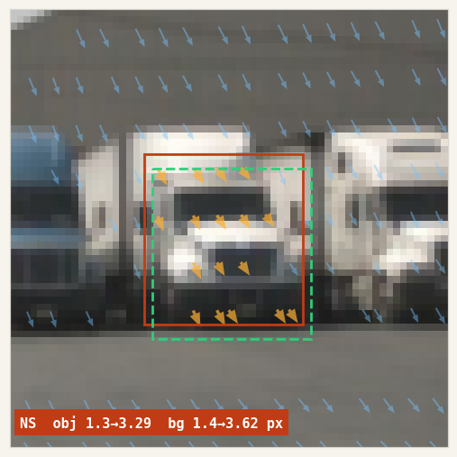
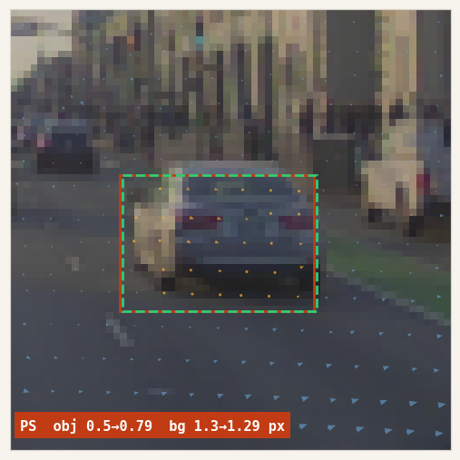
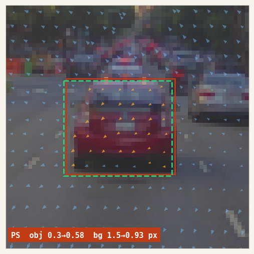
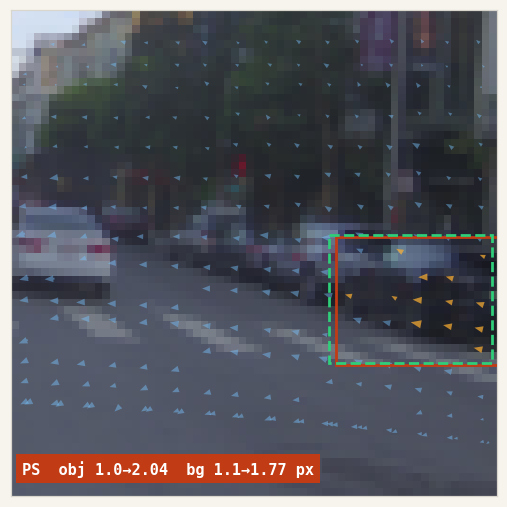
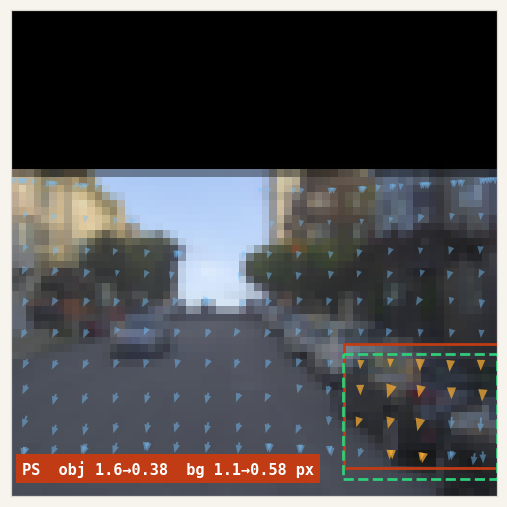
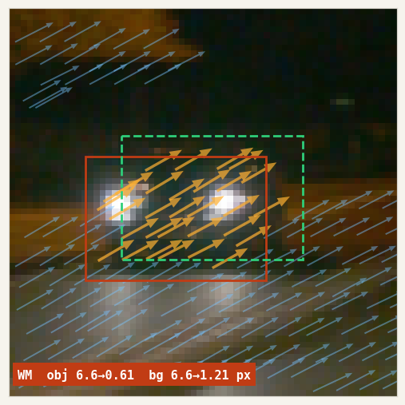
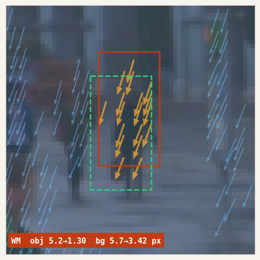

We trained a model that
corrects LiDAR-to-camera
calibration to sub-pixel.
LiDAR ↔ カメラの
キャリブずれを、
画素以下で補正する。
A 1.62 M-parameter cross-attention network takes a 128×128 image crop plus the LiDAR points projected into it, and predicts the 2-D pixel offset that snaps each point back to where it should be — 0.91 px mean object error on held-out objects, well below the native 4 px LiDAR-beam spacing.
1.62M パラメータの Cross-Attention ネットに、128×128 の画像クロップと投影済み LiDAR 点群を入れると、各点を本来の位置へ引き戻す 2D ピクセル補正を返す。未知物体に対して物体平均 0.91 px — LiDAR のビーム間隔 4 px を大きく下回る精度。

obj err before → after.物体誤差 補正前 → 補正後。§ 01 Motivation § 01 動機 Automating the calibration engineer's eye. キャリブ技術者の目を、自動化する。
Classical calibration — chessboards, targets, SfM — produces a set of rigid transforms (SE(3), i.e. rotation plus translation) between each sensor pair; they are accurate at the moment of capture and stale the moment a sensor moves. Factory calibration on a large vehicle fleet drifts out of spec within months, and running a full re-calibration pipeline in production is operationally unrealistic.
The tempting response is to throw a single large end-to-end model at the whole rig — a CalibFormer-style system that takes all sensor streams and regresses the full set of extrinsics at once. That is the wrong factoring. A unified model is expensive to train, brittle to per-vehicle sensor layout changes, and couples every sensor's error modes into every other sensor's prediction. It also bakes in a rig topology that fleet teams routinely change — adding a telephoto, moving a side LiDAR, swapping a bumper camera.
The calibration model itself is small. Six degrees of freedom per sensor pair, perhaps a few intrinsic knobs — a handful of parameters. Bundle adjustment has been solving for that class of model from 2-D observations for decades; it does not need a neural network. What it needs is observations: many per-point measurements of where each projected point actually ought to land, with uncertainty. So we factor the problem the way SfM already does:
- Network = local evidence detector. For each small RGB crop the network takes the projected LiDAR points visible inside it and, for every point, emits a 2-D Gaussian
(Δu, Δv)with full covariance — the mean says where the point should really land, the covariance says how confidently. - BA = global solver. These per-point observations are accumulated across frames and crops, then fed to a standard bundle-adjustment stage that jointly re-optimises the per-pair rigid transforms. The same stage SfM and SLAM already use. One forward pass per crop; one non-linear solve for the rig.
Why small patches are enough — and why that matters for compute. Calibration drift shows up as a local misalignment: a pole whose lidar hits sit a few pixels off its silhouette, a car whose contour does not match its returns. Whatever the underlying mis-pose, its visual signature on any single crop is bounded. The network does not need long-range attention across a full 1920×1080 frame; a small transformer on a 64×64 or 128×128 crop is enough. Attention cost scales with patch area, not image area, and a drive log yields millions of crops per vehicle per day — cheap per-patch cost is what makes the approach operationally sane.
The same primitive covers every sensor pair. Any two sensors with overlapping FOV and a shared geometric primitive — edges, points, object boundaries — can be posed as: "given projected sensor-A primitives on image B, predict the 2-D pull-back with uncertainty onto image B features." Concretely:
- LiDAR → camera. Point clouds projected onto RGB, the case we train here.
- Camera → camera, forward-forward. A telephoto paired with the main forward camera (
TELE+FCM) share a narrow overlap band; features triangulated in one can be projected into the other, and the residual estimator pulls them back onto the correct pixels. This is the common case for modern multi-focal front rigs where tele and wide drift against each other after thermal cycling. - Camera → camera, side overlap. Adjacent surround cameras with 10–20° shared FOV.
- RADAR → camera. Coarse radar points projected onto image, corrected to nearest RCS-consistent visual structure.
Where this work sits in the roadmap. The report ahead trains and validates the residual detector on public data — PandaSet here, NuScenes + Waymo in the upcoming joint run — with synthetic calibration drift applied at load time. The end-goal, covered in §08, is to move the same primitive onto our internal rigs (TMPOPC, TSS4), close the loop with an actual BA solver, and compose it with motion-distortion correction and LIVO mapping into the simulation substrate autonomy will need for the next decade.
The dataset used for this report is PandaSet — 103 outdoor driving scenes with synchronised Hesai Pandar64 LiDAR and six RGB cameras — perturbed with small synthetic calibration drift at load time, so the model sees a consistent training signal. The narrow research question here: how well does the residual generalise across object instances the model has not seen? Earlier runs held out whole scenes; here we hold out objects, isolating appearance-level generalisation from the larger scene-domain shift.
1.1 Prehistory: the toy-data lineage
Before real LiDAR ever touched the model, the whole stack was shaken out on a fully synthetic 2-D toy: coloured rectangles on a flat background, points sampled on each shape at a fixed depth, and a uniform (tx, ty) shift applied to simulate calibration drift. We iterated through a dozen small variants (v7…v20) to lock down the architecture before committing to the expensive real-data pipeline. The last of these — v20_3layer_randdepth — was a three-layer coarse-to-fine cross-attention decoder on 64×64 crops with two objects per scene at randomised depths and a ±16 px offset budget; it reached obj NLL 1.61 on held-out synthetic scenes (100 ep, 5.5 min, 1.16 M params). The PandaSet model below is the same architecture, widened to four layers with a ConvNeXt stem and a frustum-pooling head; everything that carried over from the toy stage is unchanged.
古典的なキャリブレーション — チェッカーボード、ターゲット、SfM — はセンサーペア間の剛体変換 SE(3)（回転＋平行移動）を推定する。収録の瞬間は正確だが、センサーが少しでも動いた瞬間に陳腐化する。大規模フリートの工場キャリブは数ヶ月でスペックを外れ、本格的な再キャリブ工程を量産運用で回すのは現実的ではない。
その反動で、リグ全体に巨大なエンドツーエンドモデル（CalibFormer 系）を 1 本ぶつけて全センサーの外部パラメータを一気に回帰したくなる。問題の切り分けとしてはそれは間違っている。統一モデルは学習コストが高く、車種ごとの配置変更に脆く、あるセンサーの誤差モードが他センサーの推定を汚染する。また、フリート運用で日常的に起きるリグ構成変更（テレカメラを追加、サイド LiDAR を移設、バンパーカメラを交換）をその都度学習し直すのは合わない。
キャリブ「モデル」自体は小さい。センサーペアあたり 6 自由度、内部パラメータ数個 — たかだか十数パラメータ。Bundle Adjustment はこの種のモデルを 2D 観測から推定する問題を何十年も解いてきた。そこにニューラルネットは要らない。必要なのは観測だ — 各投影点が本来どこに落ちるべきか、そしてそれをどれほど確信しているかを示す、点ごとの大量の測定値。SfM がもともと採る切り分けをそのまま踏襲する:
- ネットワーク = 局所的な証拠検出器。小さな RGB クロップごとに、中に見える投影 LiDAR 点それぞれについて、フル共分散の 2D ガウス
(Δu, Δv)を出す — 平均は「本当の位置」、共分散は「その確信度」。 - BA = 大域ソルバー。点ごとの観測をフレーム・クロップ横断で蓄積し、標準的な Bundle Adjustment に流してペアごとの剛体変換を同時最適化する。SfM や SLAM がすでに使っている工程そのもの。クロップごとに順伝播 1 回、リグごとに非線形求解 1 回。
なぜ小さいパッチで十分か、そしてそれが計算量にどう効くか。キャリブずれは局所的な不一致として現れる — ポールの LiDAR ヒットがシルエットから数ピクセルずれる、車の輪郭と点群の縁が噛み合わない。元の外部パラメータ誤差が何であれ、単一クロップ上での視覚シグネチャは有界である。ネットは 1920×1080 の全画面にわたる長距離 attention を要らない。64×64 か 128×128 のクロップ上の小さな Transformer で足りる。Attention コストはパッチの面積に比例し、画像面積には比例しない。ドライブログは 1 台あたり 1 日で数百万クロップを吐くから、パッチごとの低コストが運用上の成立条件になる。
同じプリミティブは、どのセンサーペアにも効く。視野が重なり、共通の幾何プリミティブ（エッジ・点・物体境界）を持つ 2 センサーは、「センサー A のプリミティブを画像 B に投影し、画像 B の特徴に対する 2D プルバックを不確かさつきで予測する」という同じ形にまとまる。具体的には:
- LiDAR → カメラ。本レポートで学習する、RGB への点群投影。
- カメラ → カメラ（前方 × 前方）。テレフォトと前方主カメラ（
TELE+FCM）は狭い重なり帯を共有する。片方で三角測量した特徴をもう片方へ投影し、残差推定器が正しいピクセルへ引き戻す。温度サイクルでテレとワイドが互いにドリフトしがちな、現代の多焦点前方リグで頻出のケース。 - カメラ → カメラ（サイド重なり）。隣接サラウンドカメラの 10〜20° 共有視野。
- RADAR → カメラ。粗い RADAR 点を画像に投影し、RCS と整合する視覚構造へ寄せる。
本研究の位置づけ。以降のレポートでは残差検出器を公開データで学習・検証する — 本編の PandaSet と、後続のジョイントランでは NuScenes + Waymo — どちらもロード時に合成キャリブずれを加えている。最終ゴールは §08 で述べる通り、同プリミティブを自社リグ（TMPOPC、TSS4）に載せ、実際の BA ソルバーまでループを閉じ、さらに運動歪み補正と LIVO マッピングと組み合わせ、次の 10 年の自動運転が必要とするシミュレーション基盤に仕立てることにある。
本レポートで用いるデータセットは PandaSet — Hesai Pandar64 LiDAR と RGB カメラ 6 台が同期した 103 シーンの屋外ドライブ — に、ロード時に小さな合成ずれを加えて一貫した学習信号を作った。狭く絞った問いは:学習時に見ていない物体インスタンスに対して、残差推定はどこまで汎化するか?以前のランは丸ごとシーンを hold-out していたが、ここでは物体単位で分割し、外観レベルの汎化をシーンドメインのシフトから切り分ける。
1.1 前史: 人工データ系譜
実 LiDAR がモデルに触れる前に、全スタックを純合成の 2D トイで振るい落とした。平坦な背景に色付きの矩形、各形状上に一定深度でサンプルされた点、そして一様な (tx, ty) シフトでキャリブずれを模した設定。十数個の小バリアント（v7…v20）を回して、実データパイプラインという高コスト工程に入る前にアーキテクチャを固めた。最後の v20_3layer_randdepth は 64×64 クロップ上の 3 層 coarse-to-fine Cross-Attention デコーダで、1 シーン 2 物体・深度ランダム化・±16 px のオフセット予算 — 未知合成シーンで obj NLL 1.61（100 ep、5.5 分、1.16M params）。以降の PandaSet モデルは同アーキテクチャを 4 層に拡張して ConvNeXt ステムと錐台プーリングヘッドを足したもの。トイ段階から引き継いだ要素は変わっていない。

v20_3layer_randdepth). Green × = GT projection, coloured dots = distorted input, arrows = predicted correction. Two objects with independent depths; background points on the flat plane. Per-crop obj error 13.27 px → 1.15 px after the model's pull-back.v20_3layer_randdepth）。緑× = GT 投影、色付き点 = 歪んだ入力、矢印 = 予測補正。独立深度の 2 物体、平面上の背景点。クロップごとの物体誤差は 13.27 px → モデル補正後 1.15 px。§ 02 Problem Setup § 02 問題設定 One crop, one evidence packet. 1 クロップ = 1 つの証拠パケット。
Each training example is a 128×128 RGB crop centred on a single 3-D object, together with the LiDAR points visible in the crop projected as (u, v, d) — image coordinates plus depth. A synthetic calibration perturbation (≤ 0.2 m translation, ≤ 0.5° rotation) is applied before projection, producing a distorted copy of each point; the regression target is the 2-D offset from the distorted projection back to the true projection. After a single forward pass, each crop yields a batch of per-point (μ, Σ) observations — one "evidence packet" that the downstream bundle-adjustment stage consumes.
Points are tagged obj or bg. Object points live inside the 3-D bounding box — sparse (≈ 20–40 per crop) but visually anchored. Background points are whatever else the LiDAR returns inside the crop — road, buildings, distant cars — dense but often weakly constrained by the image.
学習サンプルは 1 つの 3D 物体を中心にした 128×128 RGB クロップと、クロップ内に見える LiDAR 点を (u, v, d)（画像座標＋深度）で投影したもの。投影前に合成キャリブ擾乱（≤ 0.2 m の平行移動、≤ 0.5° の回転）を加え、各点の歪んだコピーを作る。回帰ターゲットは「歪んだ投影 → 真の投影」への 2D オフセット。順伝播 1 回で、クロップごとに点ごとの (μ, Σ) 観測がひと塊で得られる — これが下流の Bundle Adjustment に渡す「証拠パケット」。
各点には obj か bg のラベルが付く。物体点は 3D バウンディングボックス内 — 疎（クロップあたり 20〜40 点）だが画像的に錨づけされている。背景点はクロップ内のそれ以外の LiDAR 反射 — 道路、建物、遠方の車 — 密だが画像からの拘束が弱いことが多い。
§ 03 Method § 03 手法 CalibNetDepth, cross-first. CalibNetDepth、cross-first。
3.1 Architecture 3.1 アーキテクチャ
3.2 Frustum encoding 3.2 錐台エンコーディング
A plain PointMLP treats each LiDAR point in isolation — it sees (u, v, d) and nothing about its neighbours. But calibration residuals are a local-geometry problem: a point sliding sideways is only meaningful relative to points at similar depth. The frustum encoder adds that local context. For each query point i we form a 3-D box in (u, v, d) space, take the k UV-nearest points inside it, and summarise their relative offsets with a shared MLP followed by max-pool. The resulting per-point descriptor is added to the PointMLP token before the cross-attention decoder sees it.
素の PointMLP は各 LiDAR 点を単独で扱う — (u, v, d) だけを見て、近傍のことは何も知らない。一方でキャリブ残差は局所幾何の問題だ: 点が横にずれる意味は、同じ深度帯の点との相対関係でしか定まらない。錐台エンコーダがその局所文脈を足す。クエリ点 i ごとに (u, v, d) 空間で 3D ボックスを作り、その中で UV 近傍上位 k 点を取り、相対オフセットを共有 MLP → max-pool で要約する。出てきた点ごとの記述子は、Cross-Attention デコーダが見る前に PointMLP トークンへ加算される。
(u, v, d) space — radius r_uv in the image plane, r_d along depth — and take the k UV-nearest points inside it (green filled). A point that is close in UV but at a different depth layer (grey, above/below the box) is not a neighbour: depth is what separates the query object from the road behind it. (B) A shared MLP lifts each relative offset (Δu, Δv, Δd) into ℝ^D, and a max-pool over the k neighbours produces a per-point geometric descriptor that is added to the plain PointMLP token before the decoder sees it.(u, v, d) 空間で 3D ボックス（画像面で半径 r_uv、深度で r_d）を作り、その中で UV 最近傍 k 点を取る（緑塗り）。UV は近いが別の深度層にある点（ボックスの上下に位置する灰色点）は近傍ではない: 深度こそがクエリ物体とその背後の道路を分ける軸だから。(B) 共有 MLP が相対オフセット (Δu, Δv, Δd) を ℝ^D へ持ち上げ、k 近傍の max-pool で点ごとの幾何記述子を作る。これが PointMLP トークンに加算された状態でデコーダが見る。3.3 Loss 3.3 損失関数
Per-point 2-D Gaussian negative log-likelihood with full 2×2 covariance parametrised by log σᵤ, log σᵥ, ρ. The loss is averaged over valid (non-padded) points, not summed, so the gradient scale is independent of how many points fall in a crop — important when mixing datasets with different point densities.
点ごとの 2D ガウス負対数尤度、フル 2×2 共分散を log σᵤ, log σᵥ, ρ でパラメータ化。損失は有効（非パディング）点の和ではなく平均を取る。これで勾配スケールはクロップに含まれる点数に依存しなくなる — 点密度の異なるデータセットを混ぜて学習する時に重要。
3.4 Object-level split 3.4 物体単位スプリット
PandaSet's 103 scenes yield 33,458 object crops. Earlier runs held out whole scenes (10 % val), which conflates two failure modes: new instances and new environments. Here the concatenated crop pool is shuffled and split 90 / 10 at the instance level (seed 42), so every scene is represented in both splits but no crop appears in both.
PandaSet の 103 シーンから 33,458 個の物体クロップが得られる。以前のランは丸ごとシーンを hold-out（val 10%）していたが、これだと「未知インスタンス」と「未知環境」という 2 つの失敗モードが混ざる。ここでは全クロップを一塊にしてシャッフルし、インスタンス単位で 90 / 10 に分ける（seed 42）。全シーンが両スプリットに現れるが、1 つのクロップが両方に現れることはない。
§ 04 Results § 04 結果 Headline numbers. 主要指標。

| epoch | train NLL | val NLL | train obj MSE | val obj MSE | train bg MSE | val bg MSE |
|---|---|---|---|---|---|---|
| 1 | +4.468 | +4.653 | 6.06 | 6.02 | 7.25 | 7.24 |
| 25 | +3.419 | +3.377 | 3.13 | 2.90 | 5.20 | 5.18 |
| 50 | +2.718 | +2.773 | 1.94 | 1.83 | 3.90 | 3.88 |
| 75 | +2.264 | +2.336 | 1.49 | 1.42 | 3.31 | 3.43 |
| 100 | +1.908 | +2.154 | 1.20 | 1.20 | 2.92 | 3.20 |
| 125 | +1.576 | +1.969 | 1.02 | 1.04 | 2.60 | 2.97 |
| 150 | +1.271 | +1.976 | 0.85 | 0.96 | 2.33 | 2.84 |
| 175 | +1.058 | +2.083 | 0.76 | 0.89 | 2.20 | 2.69 |
| 200 | +0.989 | +2.195 | 0.73 | 0.91 | 2.15 | 2.82 |
§ 05 Ablations § 05 アブレーション What actually carries the performance. 性能を担っているのはどこか。
Two design choices from §03 were isolated by re-training with a single change each — same object-level split, same 200-epoch schedule, same seed — so the comparison is apples-to-apples. The question each answers:
- Block ordering: self-first vs. cross-first. Should the query token talk to its peers before reaching for image features, or the other way around?
- Frustum encoding on / off. Is the per-point local neighbourhood descriptor (Figure 4) paying its keep, or does a plain PointMLP on
(u, v, d)already give the decoder enough positional information?
§03 の設計選択 2 つを、それぞれ 1 箇所だけ変えて再学習して切り出した — 物体単位分割・200 エポック・同 seed で揃えているので比較はフェアだ。各アブレーションが答える問い:
- ブロック順序: self-first vs. cross-first。クエリトークンはまず仲間同士で喋るべきか、先に画像特徴へ手を伸ばすべきか?
- 錐台エンコーディング on / off。点ごとの局所近傍記述子（Figure 4）は働きに見合う価値を出しているのか、それとも素の
(u, v, d)PointMLP だけでデコーダには十分な位置情報が渡っているのか?
| config | best val NLL | Δ vs base | val obj NLL | val bg NLL | val MSE |
|---|---|---|---|---|---|
| baseline cross-first + frustum | +1.949 | — | +0.19 | +2.26 | 2.76 |
| self-first SA → CA per block | +2.045 | +0.10 | +0.17 | +2.25 | 2.73 |
| no frustum plain PointMLP only | +2.758 | +0.81 | +1.52 | +3.25 | 3.63 |
Self-first is a wash (+0.10 NLL). The two block orderings give essentially the same final model — obj NLL and bg NLL at the last epoch are within measurement noise of the baseline. This sharpens the earlier v10 finding, where self_first=True hurt a smaller 3-layer toy-dataset decoder: on the 4-layer ConvNeXt-plus-frustum setup the choice no longer matters much.
Frustum encoding is load-bearing. Removing it costs +0.81 NLL overall, and the damage is concentrated exactly where the design was supposed to help — obj NLL jumps from +0.19 to +1.52, an 8× increase. Background is less sensitive (+0.99). The plain PointMLP can position a token globally on (u, v, d), but it cannot see that this point sits alongside six other points forming a vertical line (a pole), or a dense cluster on a metal surface (a car roof). Those are exactly the cues object-point calibration hinges on. Figure 4's box-and-maxpool is doing real work, not decoration.
self-first は誤差の範囲内（+0.10 NLL）。2 種のブロック順序は実質同じモデルに収束する — 最終エポックの obj NLL・bg NLL もベースラインと測定ノイズの範囲内。以前の v10 で self_first=True が小規模 3 層トイデータのデコーダを悪化させた結果をシャープ化した格好: 4 層 ConvNeXt + 錐台の組み合わせになると、この選択はもうほとんど効かない。
錐台エンコーディングは効いている。外すと全体で +0.81 NLL のコストで、しかも被害は設計が効くはずの場所に集中している — obj NLL は +0.19 から +1.52 へ跳ね、8 倍に悪化する。背景は鈍感（+0.99）。素の PointMLP はトークンを (u, v, d) 上で大域的に置けるが、「この点が縦一列を成す 6 点と並ぶ（ポールだ）」とか、「金属表面上の密クラスターに属する（車のルーフだ）」といった情報は見えない。物体点のキャリブが頼るのはまさにそうした手がかり。Figure 4 のボックス & max-pool は装飾ではなく、ちゃんと仕事をしている。
§ 06 Analysis § 06 分析 Where the generalisation gap lives. 汎化ギャップはどこに住んでいるか。
The sub-pixel headline obscures a more nuanced story. Training NLL continues to fall through epoch 200 (obj -0.55, bg +1.04) while val NLL flattens around epoch 130. This is not uniform overfitting: val MSE continues to decrease even while val NLL stalls.
The most likely mechanism is σ overfitting. The mean prediction (Δu, Δv) generalises — the geometric relationship between image edges and LiDAR points transfers to unseen instances. The predicted covariance, however, is being calibrated against training-set residual statistics; at validation time the Mahalanobis term (err / σ)² pays the price whenever σ is too tight for the actual observed error distribution.
The gap is also not uniform across point types. Object points generalise tightly — val obj NLL +0.19 against train -0.55, a gap of 0.7. Background points carry most of the generalisation cost — val bg +2.26 against train +1.04, a gap of 1.2. Background points are exactly the points for which the image offers weak cues — sky, road, far buildings — so calibrating σ for them is the hard part, and a larger training pool is likely the cheapest way to help.
Two directions follow naturally. (i) Multi-dataset training. Adding NuScenes and Waymo gives the covariance head a more diverse residual distribution to calibrate against. (ii) σ regularisation. Penalising log|Σ| shrinkage, or swapping to a Student-t likelihood, prevents the covariance from chasing training-set minutiae.
サブピクセルという見出しの裏には、もう少し細かい話が隠れている。train NLL はエポック 200 まで下がり続ける（obj −0.55、bg +1.04）のに対し、val NLL はエポック 130 付近で頭打ち。しかし一様な過学習ではない: val NLL が停滞しても、val MSE はまだ下がっている。
最も有力な機序はσ（共分散）の過学習。平均予測 (Δu, Δv) は汎化する — 画像エッジと LiDAR 点の幾何関係は未知インスタンスへ移る。しかし予測共分散は学習セットの残差統計に合わせて校正されるため、検証時には σ が実観測の誤差分布に対してきつすぎると、マハラノビス項 (err / σ)² がペナルティを払う。
ギャップは点の種類によっても不均一。物体点はタイトに汎化する — val obj NLL +0.19 に対し train −0.55、差 0.7。汎化コストの大半は背景点が背負う — val bg +2.26 に対し train +1.04、差 1.2。背景点はまさに画像からの手がかりが弱い点 — 空、道路、遠方建物 — なので、ここの σ 校正が難所になる。最も安い対策は、学習プールを増やすことだろう。
自然に 2 つの方向が見える。(i) マルチデータセット学習。NuScenes と Waymo を加え、共分散ヘッドがキャリブレーションする残差分布を多様化する。(ii) σ 正則化。log|Σ| の縮み込みにペナルティを入れるか、Student-t 尤度に差し替えて、共分散が学習セットの細部を追いかけるのを防ぐ。
§ 07 Samples § 07 サンプル 48 held-out val crops. 検証セットから 48 クロップ。
Each tile shows per-point correction arrows (orange for object, blue for background), the raw object bounding box (red solid), the predicted-shifted box (cyan dashed), and a white centre-shift arrow. Titles read obj_err before → after, bg_err before → after, mean obj shift (dx, dy) in pixels.
各タイルは、点ごとの補正矢印（橙 = 物体、青 = 背景）、元の物体バウンディングボックス（赤実線）、予測シフト後のボックス（シアン破線）、白い中心シフト矢印を示す。タイトルは obj_err 前 → 後, bg_err 前 → 後, 物体平均シフト (dx, dy)、単位はピクセル。


§ 08 Cross-dataset joint training § 08 3 データセット同時学習 One network, three sensor rigs. ひとつのモデル、3 つのセンサーリグ。
Everything above was PandaSet-only. The same architecture can be trained jointly on NuScenes + PandaSet + Waymo — three completely different sensor rigs, camera intrinsics, LiDAR beam counts, and scene statistics — as a single run. Object-level shuffle across all three datasets, balanced 20 000 train / 500 val per dataset (seed = 42), same 1.62 M-parameter CalibNetDepth. The checkpoint below is a mid-training snapshot (all_v2 · ep 95/200 · val NLL 2.647) — training is still descending; numbers will improve.
ここまでの章はすべて PandaSet 単独。同じアーキテクチャを NuScenes + PandaSet + Waymo で同時学習できる — センサーリグもカメラ内部パラメータも LiDAR ビーム数もシーン統計も全く違う 3 データセットを、1 回の学習で束ねる。全データセット横断の物体単位シャッフル、データセットあたり 20 000 train / 500 val （seed = 42）、同じ 1.62M パラメータの CalibNetDepth。以下のチェックポイントは学習途中のスナップショット（all_v2 · ep 95/200 · val NLL 2.647）— まだ下がっている最中で、数字は今後さらに良くなる。
Per-dataset held-out val metrics (500 samples each)
データセットごとの val メトリクス（各 500 サンプル）
| dataset | nll (all) | nll (obj) | nll (bg) | mse (obj) | mse (bg) |
|---|---|---|---|---|---|
| NuScenes | +2.92 | +1.98 | +2.96 | 2.32 | 5.23 |
| PandaSet | +2.22 | +0.55 | +2.27 | 1.25 | 3.16 |
| Waymo | +3.01 | +1.63 | +3.10 | 1.93 | 4.35 |
PandaSet is the easiest for the joint model — 1.25 px mean object error, basically matching the PandaSet-specialist above (1.20 px in the §03 table) even though the shared network now also has to cover NuScenes' wide-FOV roof-rig and Waymo's narrow front-cam. Waymo finishes the strongest on absolute difficulty: its cache contains samples with 20–40 px input drift (from the higher focal length × closer objects), and the network still pulls them back to ~2 px. NuScenes is the hardest — its roof-rig crops often look nothing like PandaSet's (lower-mounted cameras, different night/rain statistics), and the object-scale distribution is wider. It still reaches 2.32 px obj MSE, well inside the native LiDAR-beam spacing, from a model that has seen one-third as many NS-specific gradients as a dedicated run.
PandaSet は結合モデルに対して最も容易 — 物体平均誤差 1.25 px、§03 の表の PandaSet 専用モデル（1.20 px）とほぼ一致する。NuScenes の広視野ルーフリグや Waymo の狭視野フロントカメラまで同じネットワークが背負っているにも関わらずだ。絶対的な難易度では Waymo が最も厳しい — キャッシュには 20〜40 px の入力ドリフトを持つサンプル（焦点距離の大きさ × 近距離の物体から生じる）が混ざる。それでもネットワークは約 2 px まで引き戻す。NuScenes が一番難しい — ルーフリグのクロップは PandaSet と似ていない（カメラ取付が低い、夜間・雨のサンプルが多い）、物体のスケール分布も広い。それでも 2.32 px に収束する。NS 固有の勾配はモデルが見た全体の 1/3 しかないのにだ。
Sample tiles — NuScenes
サンプル — NuScenes





Sample tiles — PandaSet
サンプル — PandaSet






Sample tiles — Waymo
サンプル — Waymo




Each tile shows the same legend as §07: orange per-point arrows over the object, blue over background, red solid = distorted obj bbox, green dashed = model-corrected bbox. Titles read dataset obj err before→after bg err before→after. The Waymo row is the clearest illustration of magnitude: several tiles have input drifts in the 20–30 px range, and every one of them lands within ~2–3 px of ground truth. This is what "generalises across rigs" looks like in practice — one network, three cameras, three LiDARs, one loss.
各タイルの凡例は §07 と同じ: 物体上の橙の点ごと矢印、背景上の青の矢印、赤実線 = 歪んだ物体バウンディングボックス、緑破線 = モデル補正後のボックス。タイトルは dataset obj 誤差 前→後 bg 誤差 前→後。Waymo 行がスケールの違いを最もよく示す: 複数タイルで入力ドリフトが 20〜30 px 台、そのすべてが GT から ~2〜3 px 以内に着地している。「リグをまたいで汎化する」とは、実践的にはこういうこと — 1 つのネットワーク、3 種のカメラ、3 種の LiDAR、1 つの損失。
§ 09 Next work § 09 これから From the bench to a production foundation. ベンチから、量産の土台へ。
The report above is one vertex of a larger programme: the residual-detector piece, trained on public data, validated under one generalisation regime. The pieces below compose the same local primitive — per-point 2-D Gaussian evidence plus a global BA solver — into a stack that autonomy teams can actually ship.
これまでの章はもっと大きな計画の中の 1 つの頂点 — 公開データで学習した残差検出器の断片、1 つの汎化体制の下での検証。以下のピースは、同じ局所プリミティブ（点ごとの 2D ガウス証拠＋大域 BA ソルバー）を組み合わせて、自動運転チームが実際に出荷できるスタックに仕立てていく。
-
01
Adapt to in-house rigs (TMPOPC, TSS4) and close the BA loop.
自社リグ（TMPOPC, TSS4）への適応と、BA ループの閉包。
The immediate next step is retraining the same detector on captures from our in-house platforms —
TMPOPCandTSS4— where calibration drift is real rather than synthesised at load time. The acceptance test is not NLL in isolation: per-point observations flow straight into a standard bundle-adjustment stage that jointly re-solves the sensor-pair extrinsics on live logs, and the output pose set must be consistent with the sensor manifests. This is the end-to-end check that separates "interesting research" from "we can retire the calibration cell on the line."直近の次の一歩は、同じ検出器を自社計測プラットフォーム
TMPOPCとTSS4のデータで再学習すること。ここではキャリブずれはロード時の合成ではなく実在するものになる。合否判定は NLL 単独ではなく、点ごとの観測を標準的な Bundle Adjustment にそのまま流して、実走行ログ上でセンサーペアの外部パラメータをまとめて解き直し、出てきた姿勢集合がセンサー仕様書と整合することで行う。これが「研究として面白い」と「ラインからキャリブ工程を外せる」を分ける、エンドツーエンドの試験になる。 -
02
Same primitive → LiDAR motion-distortion correction.
同じプリミティブ → LiDAR の運動歪み補正。
A rotating LiDAR sweeps its beams over roughly 100 ms; during that window the vehicle translates and the platform oscillates, so a single returned scan is body-frame inconsistent with itself. Treat each beam's timestamp as its own miniature extrinsic and ask the network, "where should this point really be?" — motion distortion becomes the same per-point 2-D Gaussian observation language, consumed by the same BA backend. One detector, two seemingly unrelated problem classes.
回転 LiDAR は約 100 ms かけてビームを掃引する。その間に車両は動き、プラットフォームは揺れるので、1 スキャン自体が車体座標系の中で自己整合しなくなる。各ビームのタイムスタンプを「ミニ外部パラメータ」と見なし、ネットワークに「この点は本当はどこにあるべきか?」と問えば、運動歪みは点ごとの 2D ガウス観測という同じ言語に落ち、同じ BA バックエンドで消費できる。1 つの検出器で、一見無関係な 2 つの問題クラスを解く。
-
03
LIVO + Gaussian Splatting — a 3-D map you can actually render.
LIVO ＋ Gaussian Splatting — レンダリング可能な 3D 地図。
Compose pixel-accurate calibration with motion-distortion correction inside a LIVO (LiDAR-Inertial-Visual Odometry) pipeline, and the natural output is no longer a discrete point cloud but a Gaussian Splat field. Calibration accuracy at capture time is what lets splats fit tight; motion correction is what keeps them crisp along fast edges. Without both, a splat map of a driving scene falls apart around moving vehicles and low scenery. With both, the splats stay coherent frame-to-frame — a photorealistic, pose-consistent 3-D reconstruction of the real road.
ピクセル精度のキャリブと運動歪み補正を LIVO（LiDAR-慣性-視覚オドメトリ）に組み込めば、自然な出力はもはや離散点群ではなく Gaussian Splat 場になる。収録時のキャリブ精度が splat をタイトにフィットさせ、運動補正が速いエッジ沿いの splat を鮮明に保つ。両方欠けると、走行シーンの splat 地図は動く車両や低い景物の周囲で破綻する。両方そろえば、splat はフレーム間で一貫性を保つ — フォトリアリスティックで姿勢整合のとれた、実道路の 3D 再構成になる。
-
04
Virtual cameras & object-only simulation.
バーチャルカメラ、そして「物体だけ」のシミュレーション。
A splat-level map is the substrate for two capabilities that redefine what simulation can be. Virtual camera: render the scene from any viewpoint, including cameras that did not physically exist on the rig — new focal lengths, new mounting positions, fleet-wide re-rendering from a smaller number of captured vehicles. Training data multiplies. Object-only simulation: because the static environment is modelled separately from moving agents, we can move vehicles and pedestrians through an otherwise unchanged world, stress-testing planners against edge cases that never appeared in the raw log. This is not frame interpolation. This is counterfactual driving — the scenario never happened, but it could have, and we can replay it pixel-accurate.
splat 精度の地図は、「シミュレーション」の意味を書き換える 2 つの能力の土台になる。バーチャルカメラ: 任意の視点からシーンを再描画する。リグに物理的に存在しなかったカメラ — 別焦点距離、別取付位置も含む — からでも描ける。少数の収録車両から、フリート全体の再描画が成立する。学習データは何倍にもなる。物体だけのシミュレーション: 静的環境と移動エージェントを分離してモデル化するので、背景は一切変えずに車両と歩行者だけをシーン内で動かせる。プランナーを、生ログには現れなかったエッジケースに対して圧力試験できる。これはフレーム補間ではない — 反実仮想的な運転だ。起きなかったが起き得たシナリオを、ピクセル精度で再生できる。
-
05
A foundation for the next decade of autonomy.
これから 10 年の自動運転を支える基盤技術。
Calibration, pose correction, splat mapping, virtual sensors, synthetic agents — each one is, in isolation, a known technique. What makes the composition interesting is that they share a single local evidence primitive and a single global solver. The next decade of production autonomy rests on getting that primitive stable across sensors, rigs, and motion regimes, and on stacking it with mapping and rendering until the output is a world you can both measure and simulate. The PandaSet result above is one step on that path. Everything upstream of §08 is the foundation stone; everything downstream will be built on it.
キャリブレーション、姿勢補正、splat マッピング、バーチャルセンサー、合成エージェント — それぞれ単独では既知の技術。合わさった時に面白いのは、全てが 1 つの局所的証拠プリミティブと 1 つの大域ソルバーを共有していること。これから 10 年の量産自動運転は、そのプリミティブをセンサー・リグ・動体レジームにわたって安定化できるかに、そしてそれをマッピングとレンダリングに積み重ねて「計測もシミュレーションもできる世界」にまで持っていけるかにかかっている。上記の PandaSet の結果は、その道筋の 1 歩。§08 までの全内容がその礎石であり、ここから下流のすべてがその上に積まれていく。